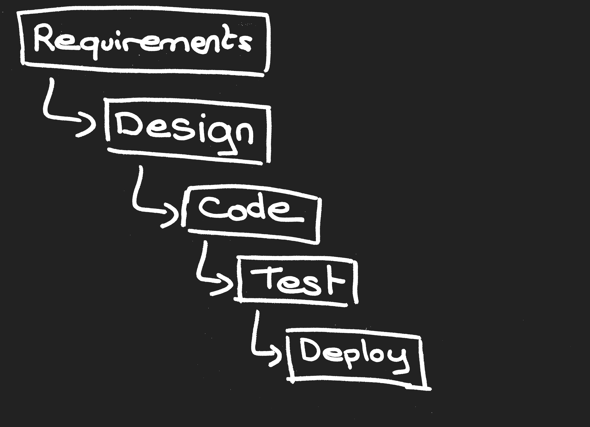
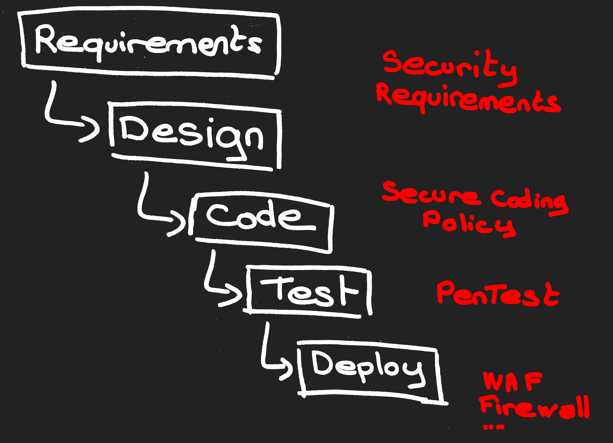
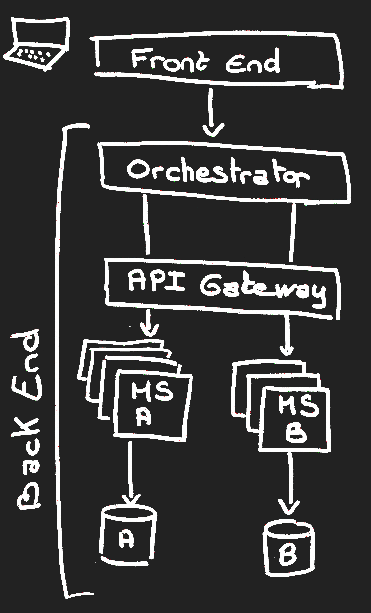
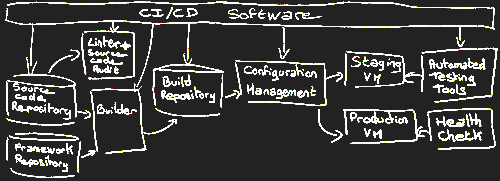
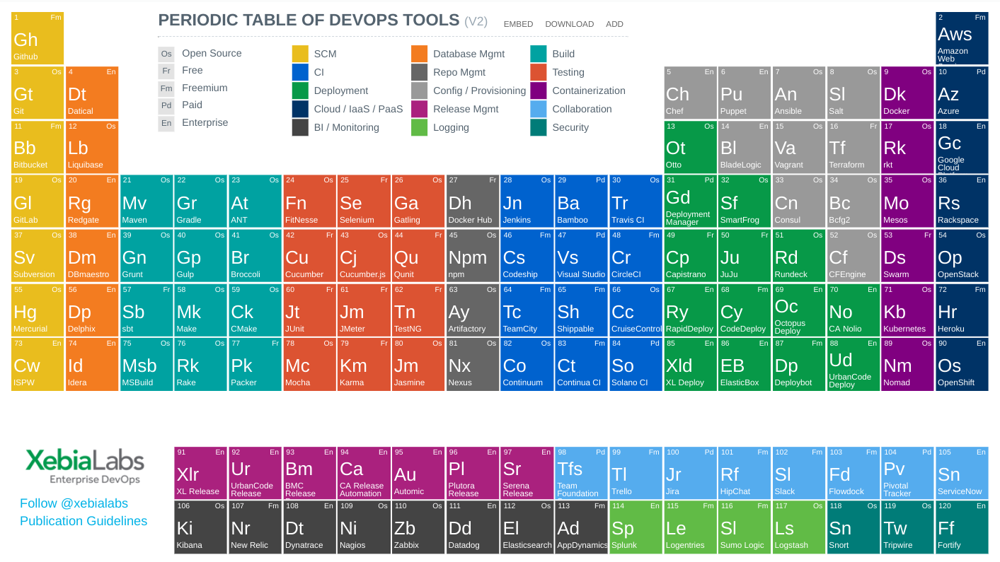

Agile Security
By Didier BERNAUDEAU
OSSIR (January 9th, 2018)
Disclaimer
I don't speak on behalf of my employer.
The information and perspective that I present are personal and don't represent those of my employer.
This presentation is the result of my personal researches and experimentation.
Chapter 1
The revelation
Bob
- Works for Cash Register Unlimited Company (since 2003)
- In charge of Application Security
- 70 projects per year
- 200 applications
Software Development Life Cycle

Secure SDLC

Everything all right!
Until the day of ...
- Alice: Hi Bob! Are there security issues regarding email sending?
- Bob: Maybe, what is data?
- Alice: For instance, banking data (PAN, IBAN, ...)
- Bob: In this case, I must analyse your project. What is the deadline?
- Alice: This is already in production 2 weeks ago!
- Bob: Oh! How is it possible? without security validation? Without security acceptance testing?
- Alice: Well ... we use Agile Methogology!
Agile ???
- Manifesto for Agile Software Development (February 2001)
- Scrum / Kanban
- Cash Register Unlimited Company has implemented Agile SDLC since 2013
Chapter 2
Become an Agile Security Officer
Product Thinking
No Project
No Application
Product Owner
- PO is the only person responsible for managing the Product Backlog.
- PO have a lot of stakeholders to take into account
Security Officer should become a major stakeholder
 Alice is the Product Owner of "Cash Register 2.0"
Alice is the Product Owner of "Cash Register 2.0"
Product Backlog
- It is a prioritized inventory of work to be done.
- Type of Product Backlog Item (PBI) :
- Features (User Stories)
- Non-Functional Requirement
- Defects (Bug Stories)
- Refactoring
- ...
Security Officer should include security topics in the Product Backlog.
User Stories
Security features:
As seller, I want to change my password on the Cash Register
Acceptance Criteria:
The password is at least 8 characters. The password contains a character from each of the following groups: Lower case alphabet, Upper case alphabet, Numbers Special Characters (!,@,#,$,%,^,&,*)
Security-focused stories
- Approach introduced by Safe Code
- A way to include non-functionnal requirement in the backlog
Example: As developer, I want to verify that sensitive data is kept restricted to actors authorized to access it.
Evil user Stories
aka "Abuser Stories"- Approach introduced by OWASP
- Using Personas: Insider Hacker, Professional hackers, Script kiddie, ...
Example: As a hacker, I can modify the price of an article.
Security in Product Backlog
- User Stories with acceptance criteria
- Security-focused stories (NFR)
- Evil user Stories
Definition of Done
List of activities to validate each item in the Product Backlog.
Security Officer should include security in DoD.
Example of secure activity: There should be no open critical and high vulnerability identified by Source Code Analysis
Sprint

Security Officer should take part in sprint meeting.
Minimal Product
Minimal Viable Product (MVP)
Product which allows a team to test an ideas with the least effort.Minimal Marketable Product (MMP)
Product with the smallest possible feature set that addresses the needs of the initial users.Security Officer should define the
Minimal Viable Security (MVS)
for the product.
Chapter 3
Security in Sprint Phases
Sprint phases
- Code
- Test
- Deploy
Phase 1 # Code
Cowboy coding
- Prevent "cowboy" development:
- Define allowed frameworks
- Define security guideline for each framework
- Change management
- Identify framework with known vulnerabilities:
- Artifact repository: JFrog X-Ray, BlackDuck Hub, ...
- Build: Dependency Check / RetireJS
MicroService
- Best agile software architecture
- 2 parts:
- Front End (WebApp / MobileApp)
- Back End (MicroService)
Securing MicroService
- Front End (WebApp):
- Linter (ESlint Security)
- Minify and Obfuscate (UglifyJS)
- Back End (Microservice):
- Stateless & Autoscalling
- Authentication Token (OAuth / JWT)
- HTTPS
- Privileged Orchestration pattern to Choreography
Microservice
Phase 2 # Test
Test-Driven Development
- Start by writing an automated test case.
- Run the test which should fail.
- Write the minimum amount of code required to make the test pass
- Run the tests to check the new test passes
- Refactors the new code
Positive testing ("Happy Path") / Negative testing
Behavior-Driven Development
- Integration test
- Test are written with DSL (Domain-specific language) like Gherkin
Feature: Account Holder withdraws cash
Scenario: Account has sufficient funds
Given the account balance is $100
And the card is valid
And the machine contains enough money
When the Account Holder requests $20
Then the ATM should dispense $20
And the account balance should be $80
And the card should be returned
Common Testing Tools
- Fitness
- Mockito
- Cucumber
- Selenium
- JBehave (Java)
- Behat (PHP)
- Hiptest
Security testing tools
- ZAP
- Gauntlt (Be mean to your code and like it)
- BDD Security
Phase 3 # Deploy
Strategy Deployment

New environment for each deployment
"Blue/green" or Canary release
Infrastructure as code (IaC)
- Tools: Chef, Puppet, Ansible, ...
- Test Driven Infrastructure:
- Linter: puppet-lint, Ansible lint, Foodcritic, RuboCop, ...
- Unit testing: RSpec-Puppet, ChefSpec, ...
- Acceptance testing: Beaker for puppet, Test kitchen for Chef, ...
- Virtual Network (LaaS and FaaS): Neutron from RedHat
Container
- Software:
- Container runtime: runC, Docker, Rocket, Garden, ...
- PAAS: OpenShift, CloudFoundry, Bluemix, ...
- Secret storage: Vault from Hashicorp, Barbican from RedHat, ...
- Network Overlay & Micro Segmentation
- Segregate Containers by host (CoreOS)
- Container vulnerabilities Scanner (Clair)
Chapter 4
Secure Software Supply Chain
Software Supply Chain
Tools
Some best practices
For securing your Software Supply Chain
- HTTPS
- Authentication
- Access Management
Any Question ?
View online at https://git.io/vNtqD